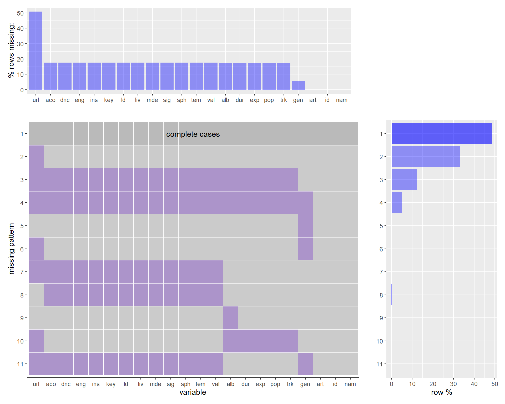

Chapter 4 Missing values

In our exploration of the dataset, we note that the spotify_track_id (trk) can uniquely identify songs on Spotify. Whenever spotify_track_id is missing, all of the audio features are also missing, as in Patterns 3 and 4 — we hypothesize that this is the case because Spotify metadata and other measures cannot be accessed without this id. Pattern 10 does not follow this trend, but only occurs in 4 rows total in the entire dataset.
We also see that missing only spotify_track_preview_url (url) is the second most common missing pattern, at around 34-35%. It is also generally missing from around 50% of our data points; however, this feature is just a link to a 30 second preview of the song. We likely will not find this pattern particularly impactful, as this feature will probably not be utilized in our project. We believe this is feature is MCAR, “Missing Completely At Random.” Additionally, we see that the features song_id (id), artist (art), and song (name) do not have any missing data. We believe this is because song_id is a unique identifier that is the concatenation of the artist and song columns, and if both song and artist data were missing, the entire row would also be missing because it would be impossible to find the right song.


Once we expanded our dataset to join the Billboard ranking and Spotify metadata information, we wanted to expand our understanding of the missingness patterns in our dataset and how they might be related with the dataset creators’ ability to access certain information using the Spotify API.
Our first hypothesis was that older songs might have a higher percentage of rows with missing data. In order to investigate this, we marked every row with at least one column with an NA as “missing” and calculated the percent of unique songs (assuming each song in the raw data with missing values was missing that same data for all of its associated entries for each week it was in the Top 100) from each year that had incomplete data. We also separately calculated a missing percentage for the spotify_genre column in particular, as our initial observation that many songs with featured artists did not have genre information, and we thought there might be a different pattern to missing spotify information. Although this second hypothesis does not seem to be true, we can see that our intuition for our first one was generally correct and that it could be helpful to remove some of the earlier decades from our dataset in certain analyses.
Additionally, because the Spotify join was on the song and performer columns, songs that included featured artists–which are often noted in various nonstandard ways, from multiple abbreviations of “featuring” to uses of “&” and other separating characters–would prevent us from properly identifying a song and accessing its features. If genre information was missing, we believed all other Spotify song features would also be missing. Thus, we searched for all songs featuring additional artists as best as possible, and plotted the proportions of missingness between songs with and without. Our results here do not seem to give evidence supporting our hypothesis, and we also found that the randomness to genre’s missing pattern is due to its existence at both the album level and individual track level (while song information exists only per track).